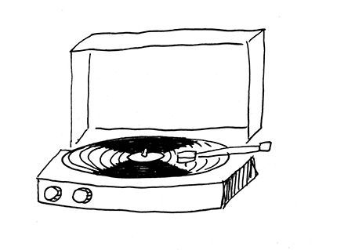

Sobre mim: Me chamo Franciele Reis e atualmente tenho 20 anos de idade e estou cursando Técnico em Análise e desenvolvimento de sistemas na Faculdade UniProjeção e tem sido uma experiencia enriquecedora Conheça sobre a Faculdade
Sobre meus objetivos profissionais: Atualmente sou auxiliar notarial e registral no cartório do 2ºOficio de Sobradinho, caso precise resolver alguma situação juridica de uma olhada em nosso site Seu cartóro digital estamos sempre a disposição.Busco novas experiencias pois gosto de desafios novos todos os dias, assim posso evoluir sempre mais, sou muito curiosa e criativa. Estou estudando e buscando certificações para a área de banco de dados, engenharia de software e segurança da informação, são áreas que tenho muito interesse e curiosidade de aprender mais sobre.
Minhas paixões: Eu amo fotografar, registrar momentos, pois uma fotografia é um instante de vida capturado para a eternidade. Outra coisa que amo é edição, meu passa tempo preferido com certeza é editar as fotos que tiro, e claro amo escutar músicas, e adoro assistir animes, principalmente filmes de animes, me encanta muito
.jpg)
Filmes de Animações
Os filmes de animações do Studio Ghibli apesar de alguns serem um pouco antigos, trazem boas reflexções de questões que são vividas ainda nos dias atuais por nós, fiz uma listagem dos melhores para se relfetir e se emocionar

As melhores músicas
Músicas são para mim um tipo de terapia, tenho uma diferente para cada tipo de humor em que eu estiver no dia, compartilho aqui com você as minhas preferidas
Fotografias
Como eu disse um pouco acima, gosto bastante de fotografar e compartilho um pouco de cada clik no meu instagram, no momento está privado, mas vou disponibilizar algumas atraves de outra platarforma